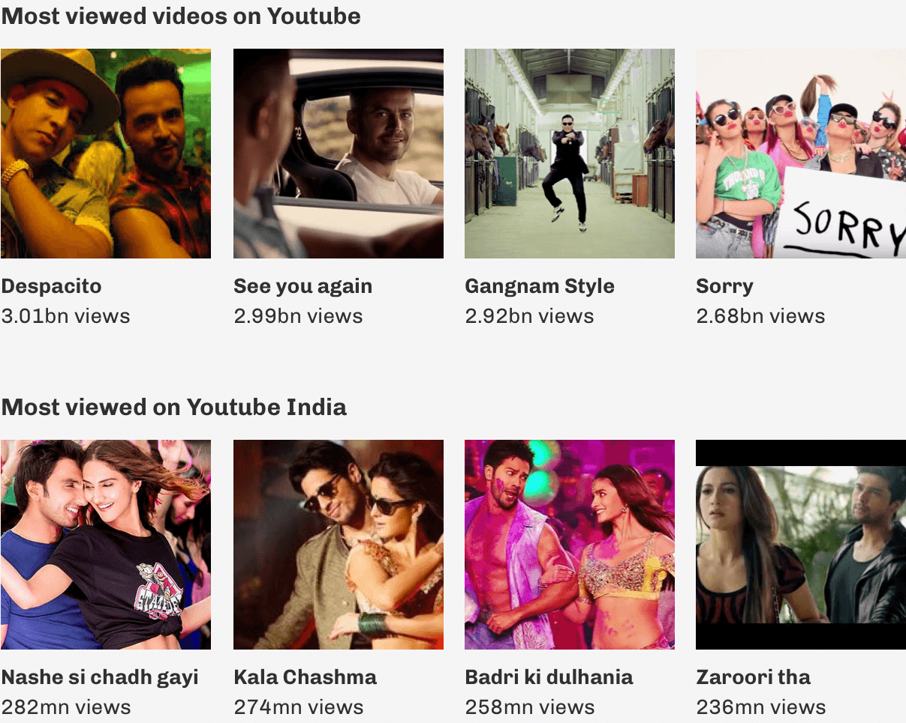
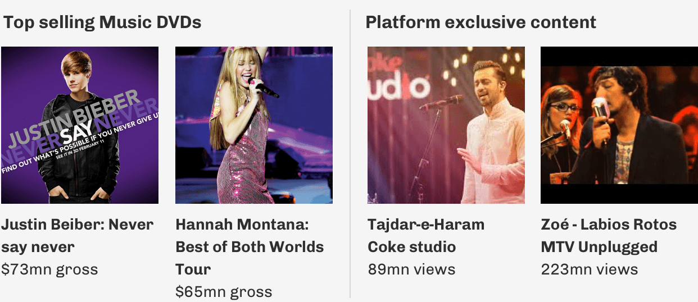
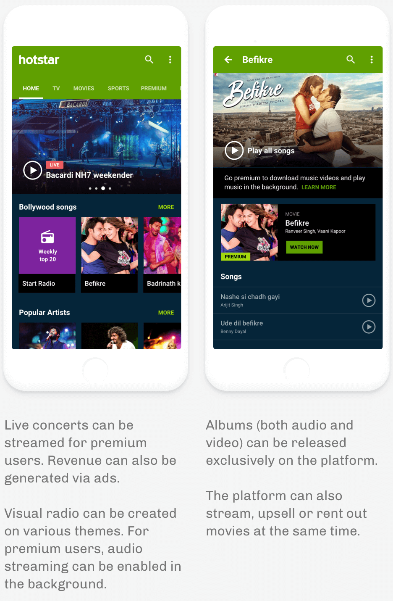
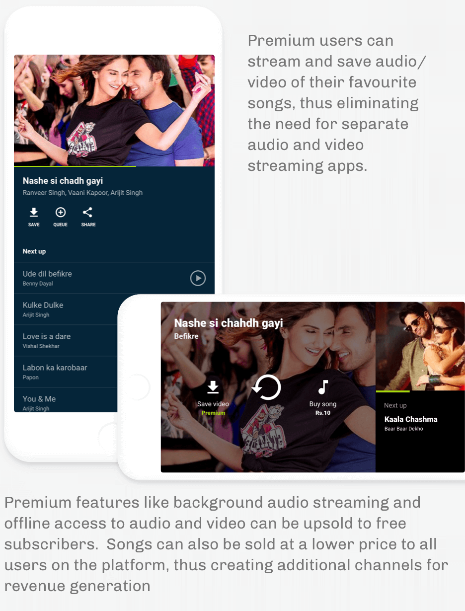

Hotstar-Case study
Discovering new product opportunities for a leading video streaming platform.
Hotstar is an immensely popular video streaming platform in India that streams a wide range of content including sports, international and vernacular TV shows, movies and web series. I created this report as a part of their hiring process, exploring new product opportunities while documenting my design thinking and process. The three areas I explored were:
1. Distribution
Improve existing mediums of distribution and explore new avenues.
2. Content
What are the new forms of content that can be made available on the platform and how can we improve existing content?
How can live be taken to the next level? What value sets can be added?
In my explorations, I considered on monetization via ads, subscriptions, etc. to be the primary goal.
Process overview
Design is an iterative process that involves constant feedback, evaluation and improvement. I have divided my process into 7 broad stages. Please keep in mind that design is more a dynamic process than a linear one.
1. Ideation-Mind mapping
Using a mind map, I jotted down the various forms of content that can be streamed on the platform. New ideas needed to validated first via available data and by evaluating the performance of existing solutions. They can be then prioritized and developed as per business needs and goals.
 For the scope of this report, we’ll keep our focus to a single domain, i.e. Music.
For the scope of this report, we’ll keep our focus to a single domain, i.e. Music.
2. Data validation: Music Videos
It’s no surprise that 98 of the top 100 most watched videos on Youtube are music videos. 63% Indians using YouTube watch music videos and the most subscribed Indian Youtube channels happen to be those of music labels. According to EY India, the number of users who stream music online is expected to triple by 2020.

What works:
Fresh video content, for eg. new bollywood music enjoys an edge over other content in India. Partnering with production houses for exclusive music releases can be a strategy worth exploring. Other offerings can be: full concert streams, exclusive live performances and sponsored online productions (like MTV unplugged, Coke studio, etc.), weekly top 20 and visual radio on various themes.

Monetization:
Fresh video content, for eg. new bollywood music enjoys an edge over other content in India. Partnering with production houses for exclusive music releases can be a strategy worth exploring. Other offerings can be: full concert streams, exclusive live performances and sponsored online productions (like MTV unplugged, Coke studio, etc.), weekly top 20 and visual radio on various themes.
What may not work:
A major chunk of revenue goes to music labels and publishers. They also need a large scale to fund the operational costs. Moreover, people are accustomed to using Youtube as a source of free music videos. They may not switch to a different platform unless the content offering is unique.
3. User research: Interviews and personas
It is important to define the target group and understand their behaviours. The following video demonstates a method to validate our hypotheses.
User personas:
Creating personas is a great way to learn about the spectrum of goals and needs of your users. A sizeable sample set of users needs to be interviewed and categorized to pin-point common needs and prioritize value propositions.
The actual process may take several weeks to complete. We have created 3 diverse personas for whom we would like to build a product, say a music video streaming service.


It’s possible that some interviewees don’t need the proposed solution or do not fall in any target group. We must define a success criteria (say, 7 out of 10 interviewees need this solution) before prioritizing features to build. Features must appeal to a large number of people to become successful.
4. Value propositions
Articulating value propositions based on user research and data helps us define the best features for our users. A good way to define value propositions is the following template proposed by Geoff Moore:
For _______ (target user)who _______ (has a need)
our product/platform ________ (what are you offering)
- For people who download bollywood music audio/video, our product provides a one stop and low cost solution to download/consume quality content on all devices.
- For music lovers who love live music productions, our platform provides great content that is not available elsewhere.
- For concert goers who love to see live performances, our platform provides the opportunity to watch artists perform live all over in the world.
- For users who pay for too many audio/video subscription services, the product offers both audio and video streaming at no additional cost.
- For explorers who struggle to find new music online, the platform helps them discover fresh music from a number of artists they may not have heard before.
5. UX flows
While designing features, user flows help us chart out how users navigate the website or app. A few things to consider while doing this exercise is the platform you’re designing for (android in this case) and existing navigation patterns. Error states like No internet connection, Server errors, etc. should also be taken into account. In this case however, we’ll keep it simpler and focus on the happy paths.
Here I have illustrated a very basic flow focussing on the navigation starting on the app homepage and ending where the user plays a video.

6. Wireframing and UI designs
Wireframing and UI designing should be done in accordance to the existing patterns in the app familiar to the users and in adherence to the style guide.
The following designs are personalized for a user who consumes to a lot of music.


7. Testing and Feedback
Testing a product and collecting user feedback is a fundamental part of the UX design process. Designing purely on intuition and assumptions wastes a lot of time and effort, as feedback is collected only at the end of the release cycle. Testing helps greatly in eliminating pain points that may have been missed during the design phase itself, immensely helping in improving product usability.
The process can be broken down 4 stages:
1. Defining protocol
Start with outlining the objectives of the. Have clear answers to questions like: “What shall we test?”, “What do we aim to find out from this test?”, “With whom will we test?” and “How will we test?”
Testing strategies may differ depending on what you are testing.
2. Creating prototypes
Prototypes are designs that give a sense of the final product. They are great for testing concepts with users. Sketches also can be prototyped and tested to validate ideas. High fidelity prototypes take longer to develop but give a real sense of the product.
3. Conducting user tests
Before conducting user tests, understand the users you’re building the product for. Testing should include people from different backgrounds who fall into the target group. Sometime’s I record this exercise as it can be analyzed in the future.
4. Analyzing and implementing feedback
Analyze the tasks that the users have successfully completed and mark the areas where users experienced difficulty in completing a task. This helps in pin-pointing areas of improvement.
Conclusion
As a UX designer, we need to be flexible with the processes employed. There’s no one-process fits all solution. Like our products, our processes also need to eveolve over time based on the available resources and product needs. The end goal however, remains the same-to create the best experience for our users.
Avik Dey
UI/UX Designer and Product Manager. Previously led design teams at TinyOwl/Runnr. Designed and shipped successful products for e-commerce, SaaS, Finance, Travel, Hospitality and Healthcare.